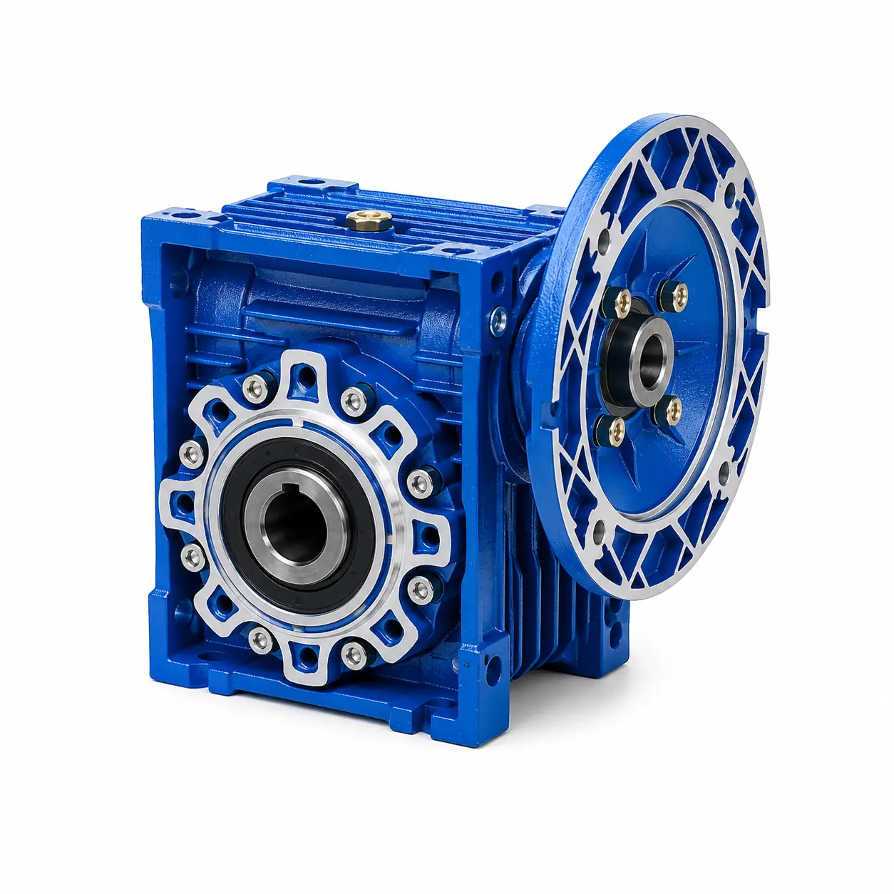
Worm Gear Reducers
NMRV, NRV, PCRV and DRV right-angle reducers for compact, quiet speed reduction. Available in multiple ratios, sizes, mounting positions and input configurations.
- Compact aluminum housing
- High reduction ratios in one stage
- Conveyors, packaging and automation
PRODUCT DETAILS →
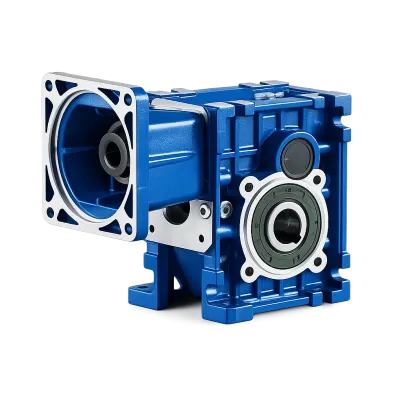
Hypoid Gear Reducers
BKM right-angle gearboxes offer higher efficiency than many conventional worm solutions and suit continuous-duty applications.
- High transmission efficiency
- Compact right-angle layout
- IEC motor or solid-shaft input options
PRODUCT DETAILS →
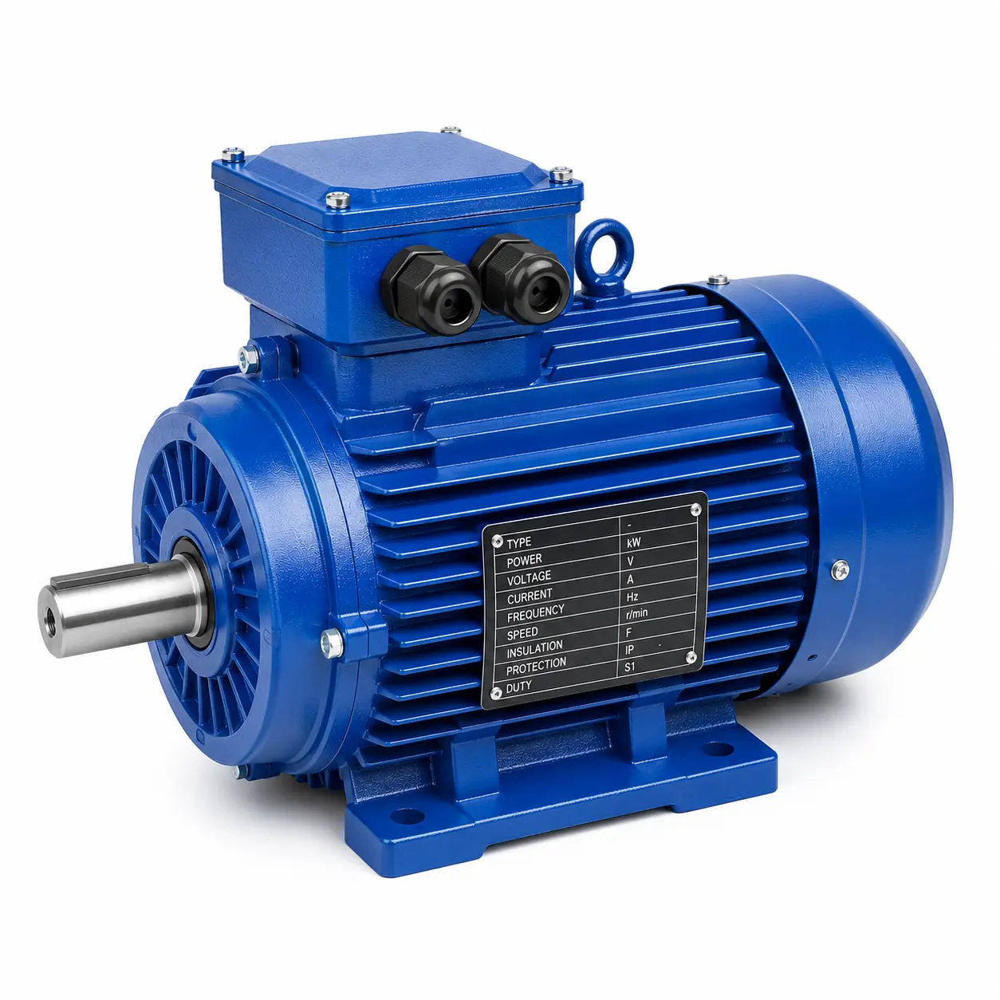
Electric Motors
Industrial motors for standalone use or matching with SMK reducers, including single-phase, three-phase and brake motor options.
- Aluminum housing designs
- IEC-compatible mounting dimensions
- Stable operation and thermal performance
PRODUCT DETAILS →
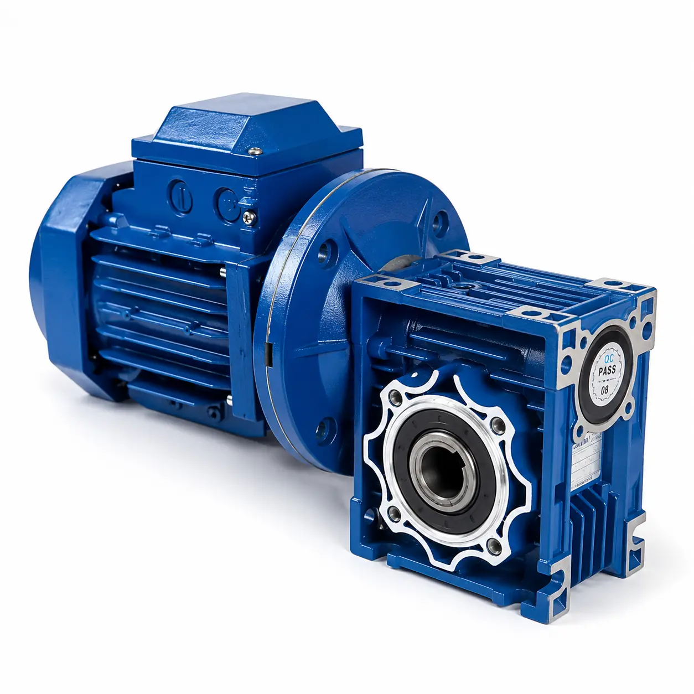
Gear Motors
Integrated worm gearbox and motor assemblies selected to meet target speed, torque, duty cycle, voltage and installation requirements.
- AC and DC options
- Single-phase and three-phase packages
- Matched, ready-to-install drive solutions
PRODUCT DETAILS →
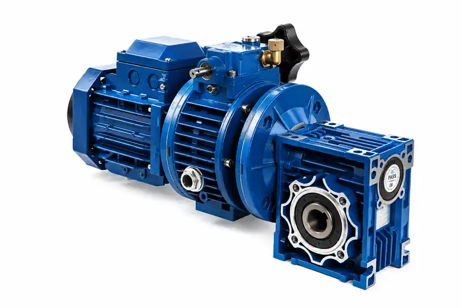
NMRV + UDL Variable Speed Gear Motor
Integrated NMRV worm gearbox, UDL mechanical speed variator and three-phase motor for adjustable industrial output speed.
- Manual variable-speed adjustment
- Compact right-angle output
- Multiple NMRV and UDL / UDT combinations
PRODUCT DETAILS →
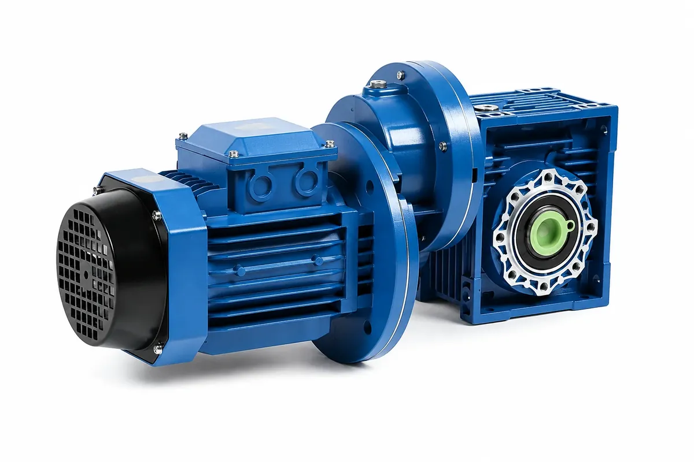
NMRV + PC Gear Motor
Three-phase motor, PC helical pre-stage and NMRV worm gearbox assembled for extended reduction and compact right-angle output.
- Two-stage reduction arrangement
- Broad total ratio options
- Multiple PCRW combinations
PRODUCT DETAILS →
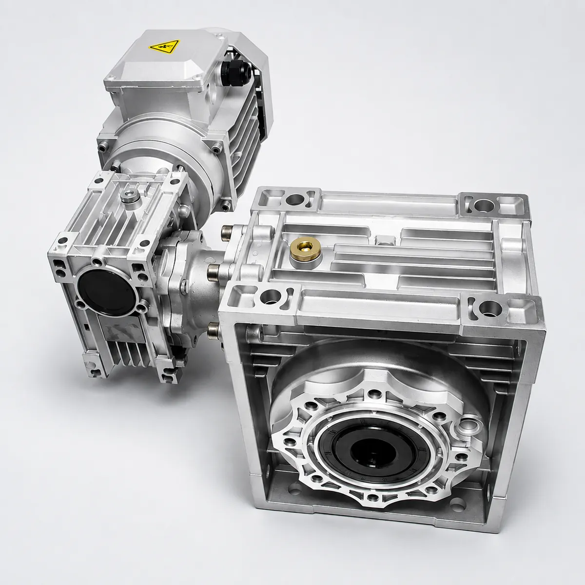
DRV Double Worm Gear Motor
Two worm reduction stages with a three-phase motor for high total ratios and low-speed right-angle output.
- Total ratios listed from 100 to 900
- Multiple DRV size combinations
- Detailed selection and dimension data
PRODUCT DETAILS →
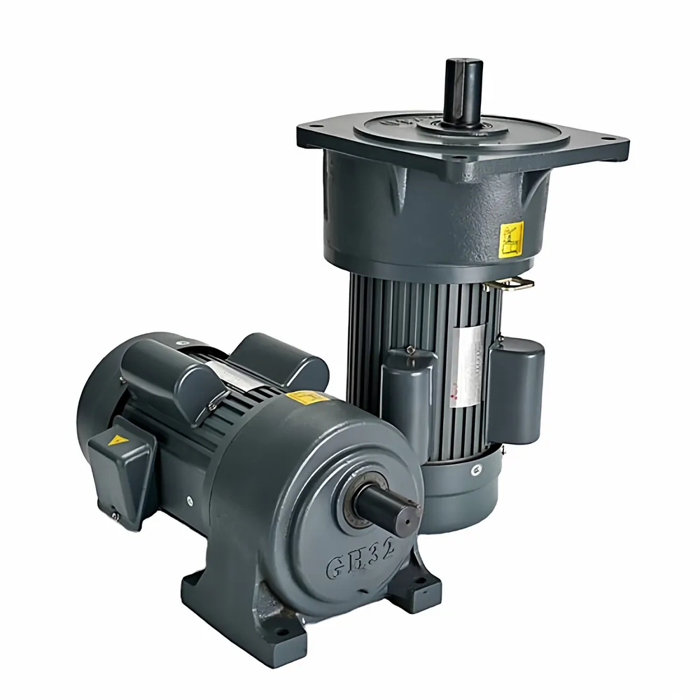
Small AC Gear Reduction Motor
Compact single-phase or three-phase geared motors with horizontal, vertical and optional brake configurations.
- 100 W to 3700 W supplied selection range
- Ratios from 3:1 to 200:1
- BH.S horizontal and BV.S vertical options
PRODUCT DETAILS →
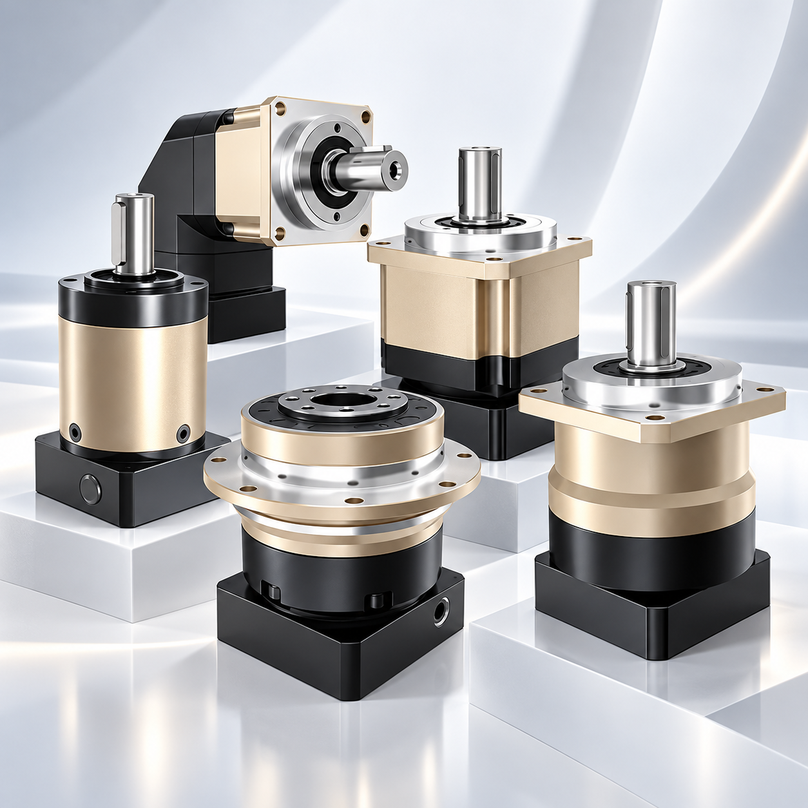
Planetary Gearboxes
High-precision inline and right-angle planetary gearboxes for servo drives, automation equipment and demanding motion-control applications.
- PAB, PABR and PPG series
- 1 or 2 stages with ratios from 3:1 to 200:1
- Low-backlash configurations for servo and stepper motors
PRODUCT DETAILS →
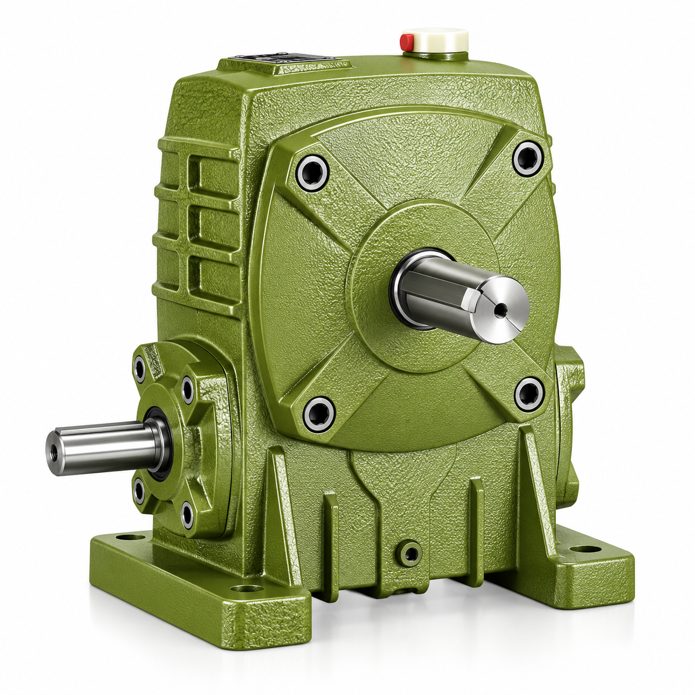
WP Series Worm Gearboxes
Cast-iron right-angle worm gear reducers for robust industrial drives, available with solid or hollow output arrangements.
- Frame sizes 40 to 250
- Standard ratios from 10:1 to 60:1
- Solid-shaft or hollow-shaft output configurations
PRODUCT DETAILS →
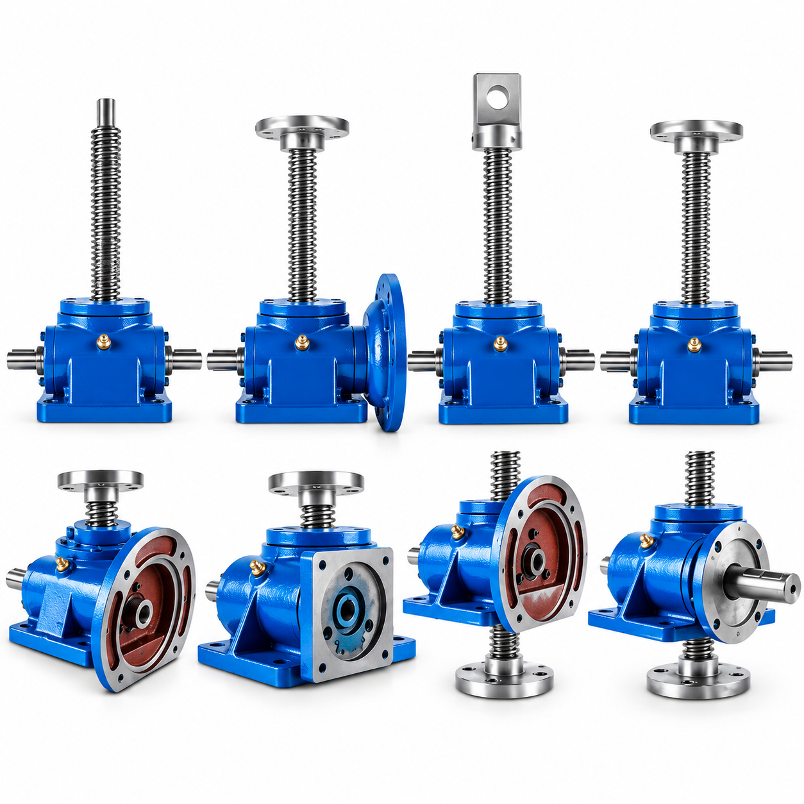
SWL Screw Lift Worm Gear
Worm screw jacks for controlled lifting, lowering, pushing and positioning in industrial machinery.
- Maximum load from 9.8 to 980 kN
- Trapezoidal-screw and ball-screw configurations
- Foot or bracket mounting
PRODUCT DETAILS →
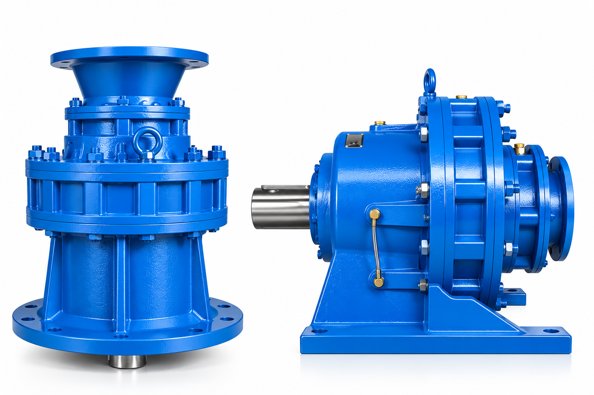
X/B/JXJ Series Cycloidal Reducers
Cycloidal pin-wheel reducers for compact, high-ratio industrial drives with foot or flange mounting options.
- One-stage ratios from 9:1 to 87:1
- Two-stage ratios from 121:1 to 1849:1
- 0.37–55 kW rated power range
PRODUCT DETAILS →